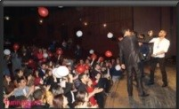
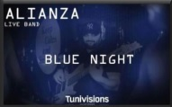
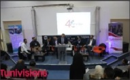
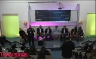
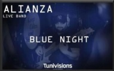
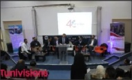
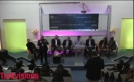

Club Tunivisions ISGIS en collaboration avec Club Tunivisions FSEGS a organisé une conférence à l’occasion de la journée internationale de la femme sous le titre de " تونسية يا الكل انت"au complexe Mohamed Jammoussi le 07/03/2018.
Suite au succès de la soirée BLUE NIGHT 1.0 club tunivisions isgis a réorganisé la deuxième édition « blue night 2.0 » c'est une deuxième édition d’une soirée pleine de succès, cette soirée était pour objectif de changer d’ambiance et se motiver aux examens. Elle était animée par la fameuse band live ALIANZA à hôtel GOLDEN TULIP.
On a organisé cette conférence le 09/03/2019, au sein de l’institut supérieur de gestion industrielle Sfax afin de développer les connaissances de l’étudiant en termes d’industrie 4.0 . Cet évènement contient aussi un workshop qui a aidé à l’amélioration du networking pour les étudiants, nous avons accueilli plus que 300 étudiants.
C’est une conférence qui était organisé le 08/02 /2020 au sein de l’institut supérieur de gestion industrielle afin de permettre aux participants de mieux comprendre l'entrepreneuriat social et d'avoir le retour d'expériences des entrepreneurs qui vont être présents.